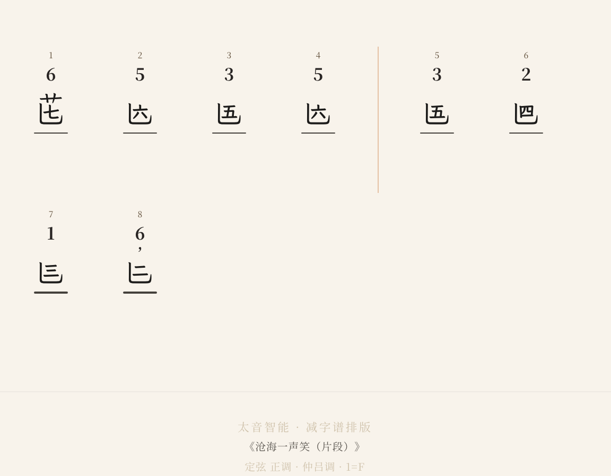

内部演示 · 2026-11-26
把看不懂的老谱，
变成能弹的曲子。
网页打开就能用 · 不用装 · 断网也能开
→ 翻页 · F 全屏 · S 备注
01 / 06一 · 问题
哪根弦、按第几徽、哪个手指、怎么弹——一个方块里塞四件事。
会弹的人读得懂；不会弹的人，对着一本谱一个字也用不上。
二 · 判断
弦、徽、指法、音高——四件事都是可计算的字段。
所以它才能播、能改、能转简谱、能排指法、能搜、能溯源。
反过来，凡是把减字当图片处理的做法，做完了都只能看，不能用。
03 / 06三 · 现在能做什么
进 来
出 去
连打示例：ad9f6cg4 = 大九六分绰勾四。2026-11-28 起，识别、音位、调音、跟练、录音、日志、设置各有独立页，主页只做打谱；顶部「功能导航」直达。
04 / 06四 · 现场走一遍
顺序提醒：先导出，再编排。按音类连字字形还没补齐，编排后谱面会散成部件。

五 · 边界与下一步
现 状
接 下 来
现在就能打开：
qiaopengjun5162.github.io/taiyin-guqin